In this document, we demonstrate how to solve a 2D Poisson problem with Neumann boundary conditions, using existing objects from the oomph-lib library:
![$ D = \left\{ (x_1,x_2) \in [0,1] \times [0,2]\right\} $](form_1.png) . The domain boundary 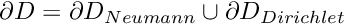, where . The domain boundary 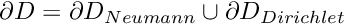, where ![$ \partial D_{Neumann} = \left\{ (x_1,x_2) | x_1=1, \ x_2\in [0,2] \right\} $](form_3.png) . On . On  we apply the Dirichlet boundary conditions we apply the Dirichlet boundary conditions 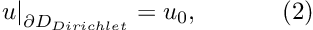 where the function is given. On is given. On  we apply the Neumann conditions we apply the Neumann conditions 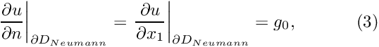 where the function is given. is given. |
![\[ \sum_{i=1}^2 \frac{\partial^2u}{\partial x_i^2} = f(x_1,x_2), \ \ \ \ \ \ \ \ \ \ (1) \]](form_0.png)
We provide a detailed discussion of the driver code two_d_poisson_flux_bc.cc which solves the problem for
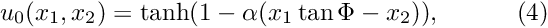
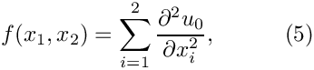
and
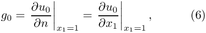
so that  is the exact solution of the problem. For large values of
is the exact solution of the problem. For large values of  the solution approaches a step function
the solution approaches a step function
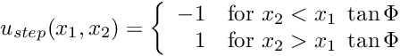
and presents a serious challenge for any numerical method. The figure below compares the numerical and exact solutions for 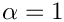 and  .
.

Most of the driver code is identical to the code that solves the equivalent problem without Neumann boundary conditions. Therefore we only provide a detailed discussion of those functions that needed to be changed to accommodate the Neumann boundary conditions.
Global parameters and functions
As in the Dirichlet problem, we define the source function (5) and the exact solution (4), together with the problem parameters  and , in a namespace
and , in a namespace TanhSolnForPoisson. We add the function TanhSolnForPoisson::prescribed_flux_on_fixed_x_boundary(...) which computes the prescribed flux required in the Neumann boundary condition (3). The function evaluates 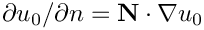 for the normal direction specified by the vector 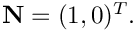
The driver code
The driver code is very similar to that for the pure Dirichlet problem: We set up the problem, check its integrity and define the problem parameters. Following this, we solve the problem for a number of values and document the solution.
The problem class
The problem class is virtually identical to that used for the pure Dirichlet problem: The only difference is that the class now contains an additional private data member, FluxPoissonProblem::Npoisson_elements, which stores the number of 2D "bulk" elements in the mesh, and an additional private member function FluxPoissonProblem::create_flux_elements(...). pwd
[See the discussion of the 1D Poisson problem for a more detailed discussion of the function type PoissonEquations<2>::PoissonSourceFctPt.]
The Problem constructor
The first part of the Problem constructor is identical to that used for the pure Dirichlet problem: We create a 2D Mesh consisting of 4x4 quadrilateral Poisson elements:
Before continuing, we store the number of 2D "bulk" Poisson elements in the variable FluxPoissonProblem::Npoisson_element:
Now, we need to apply the prescribed-flux boundary condition along the Neumann boundary . The documentation for the SimpleRectangularQuadMesh shows that this boundary is mesh boundary 1. The necessary steps are performed by the function create_flux_elements(..), described in the section Creating the flux elements below.
The rest of the constructor is very similar to its counterpart in the pure Dirichlet problem. First we apply Dirichlet conditions on the remaining boundaries by pinning the nodal values. Next, we finish the problem setup by looping over all "bulk" Poisson elements and set the pointer to the source function. Since we have added the PoissonFluxElements to the Mesh, only the first Npoisson_element elements are "bulk" elements and the loop is restricted to these. We then perform a second loop over the PoissonFluxElements which need to be passed the pointer to the prescribed-flux function TanhSolnForPoisson::prescribed_flux_on_fixed_x_boundary(...). Finally, we generate the equation numbering scheme.
Creating the flux elements
oomph-lib provides an element type PoissonFluxElement, which allows the application of Neumann (flux) boundary conditions along the "faces" of higher-dimensional "bulk" Poisson elements. PoissonFluxElements are templated by the type of the corresponding higher-dimensional "bulk" element, so that a PoissonFluxElement<QPoissonElement<2,3> > is a one-dimensional three-node element that applies Neumann boundary conditions along the one-dimensional edge of a nine-node quadrilateral Poisson element. Similarly, a PoissonFluxElement<QPoissonElement<3,2> > is a two-dimensional quadrilateral four-node element that applies Neumann boundary conditions along the two-dimensional face of a eight-node brick-shaped Poisson element; etc.
The constructor of the PoissonFluxElement takes two arguments:
- a pointer to the corresponding bulk element
- the index
face_indexof the face that is to be constructed. The convention for two-dimensional Q-type elements is that the face_index is 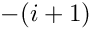 when the coordinate 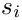 is fixed at its minimum value over the face and 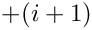 when is fixed at its maximum value over the face
The layout of the elements in the SimpleRectangularQuadMesh is sufficiently simple to allow the direct determination of the face index: Elements 3, 7, 11 and 15 are located next to mesh boundary 1 and along this boundary the element's local coordinate 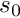 has a constant (maximum) value of +1.0. Hence we need to set face_index=1
In more complicated meshes, the determination of the face index can be more difficult (or at least very tedious), especially if a Mesh has been refined non-uniformly. The generic Mesh class therefore provides helper functions to determine the required face index for all elements adjacent to a specified Mesh boundary. This allows the creation of the flux elements by the following, completely generic procedure: We use the function Mesh::boundary_element_pt(...) to determine the "bulk" elements that are adjacent to the Neumann boundary, and obtain face_index from the function Mesh::face_index_at_boundary(...). We pass the parameters to the constructor of the PoissonFluxElement and add the (pointer to) the newly created element to the Problem's mesh.
"Actions before solve"
The function Problem::actions_before_newton_solve() is identical to that in the
pure Dirichlet problem and is only listed here for the sake of completeness:
Post-processing
The post-processing, implemented in doc_solution(...) is similar to that in pure Dirichlet problem. However, since the PoissonFluxElements are auxiliary elements which are only used to apply Neumann boundary conditions on adjacent "bulk" elements, their error checking function is not implemented. We cannot use the generic Mesh member function Mesh::compute_error() to compute an overall error since this function would try to execute the "broken virtual" function GeneralisedElement::compute_error(...); see the section Exercises and Comments for a more detailed discussion of "broken virtual" functions. Error checking would therefore have to be implemented "by hand" (excluding the PoissonFluxElements), or a suitable error measure would have to be defined in the PoissonFluxElements.
We do not pursue either approach here because the difficulty is a direct consequence of our (questionable) decision to include elements of different types in the same Mesh object. While this is perfectly "legal" and often convenient, the practice introduces additional difficulties in refineable problems and we shall demonstrate an alternative approach in another example.
Exercises and Comments
- What happens if you do not create the
PoissonFluxElementsbut leave the nodes on the Neumann boundary un-pinned? Compare the computational result to those obtained when you set the prescribed flux to zero, 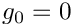. Does this make sense? [Hint: Remember the "natural" boundary conditions for Poisson's equation]. - Try to compute the error of the computed solution by re-instating the global error checking procedure in// Doc error and return of the square of the L2 error//---------------------------------------------------sprintf(filename,"%s/error%i.dat",doc_info.directory().c_str(),doc_info.number());some_file.open(filename);mesh_pt()->compute_error(some_file,TanhSolnForPoisson::get_exact_u,some_file.close();
doc_solution(...). What happens when you run the code? The code's behaviour illustrates a general convention inoomph-lib:A general convention Someoomph-libfunctions, such asGeneralisedElement::compute_error(...), are defined as virtual functions in a base class to allow the implementation of generic procedures such asMesh::compute_error(...), which loops over all of theMesh'sconstituent elements and executes their specificcompute_error(...)member functions. In some rare cases (such as the one encountered here), the implementation of a particular virtual function might not be sensible for a specific element. Therefore, rather than forcing the "element-writer" to implement a dummy version of this function in his/her derived class (by declaring it as a pure virtual function in the base class), we provide a "broken virtual" implementation inGeneralisedElement. If the function is (re-)implemented in a derived element, the broken version is ignored; if the function is not overloaded, the broken virtual function throws an error, allowing a traceback in a debugger to find out where the broken function was called from. We note that this practice is not universally approved of in the C++ community but we believe it to have its place in situations such as the one described here.
Incidentally, the code discussed above contains another (possibly more convincing) example of why "broken virtual" functions can be useful. Recall that the creation of thePoissonFluxElementson the Neumann boundary was greatly facilitated by the availability of the helper functionsMesh::boundary_element_pt(...)and
Mesh::face_index_at_boundary(...). These functions are implemented in the genericMeshbase class and determine the relevant parameters via lookup schemes that are stored in that class. Obviously, the lookup schemes need to be set up when a specificMeshis built and this task can involve a considerable amount of work (see also Setting up the boundary lookup schemes). Since the lookup schemes are useful but by no means essential, the three helper functions are again implemented as broken virtual functions. If the functions are called before the required lookup schemes have been set up, code execution stops with a suitable warning message. - Implement the error computation by hand to familiarise yourself with the way in which the
Mesh::compute_error(...)function works.
Setting up the boundary lookup schemes
oomph-lib provides a range of helper functions that set up the boundary lookup schemes for specific Mesh classes. For instance, the QuadMeshBase class forms a base class for all Meshes that consist of two-dimensional quadrilateral elements and has a member function QuadMeshBase::setup_boundary_element_info() which can be called from the constructor of any derived Mesh class to set up the lookup schemes required by Mesh::boundary_element_pt(...) and Mesh::face_index_at_boundary(...).
Source files for this tutorial
- The source files for this tutorial are located in the directory:
demo_drivers/poisson/two_d_poisson_flux_bc/ - The driver code is:
demo_drivers/poisson/two_d_poisson_flux_bc/two_d_poisson_flux_bc.cc
PDF file
A pdf version of this document is available.